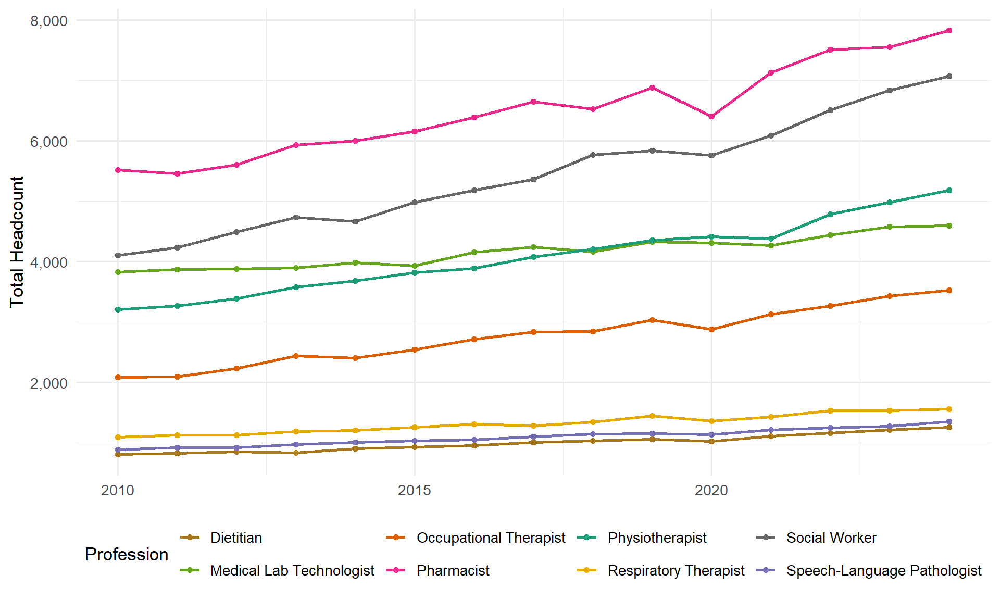
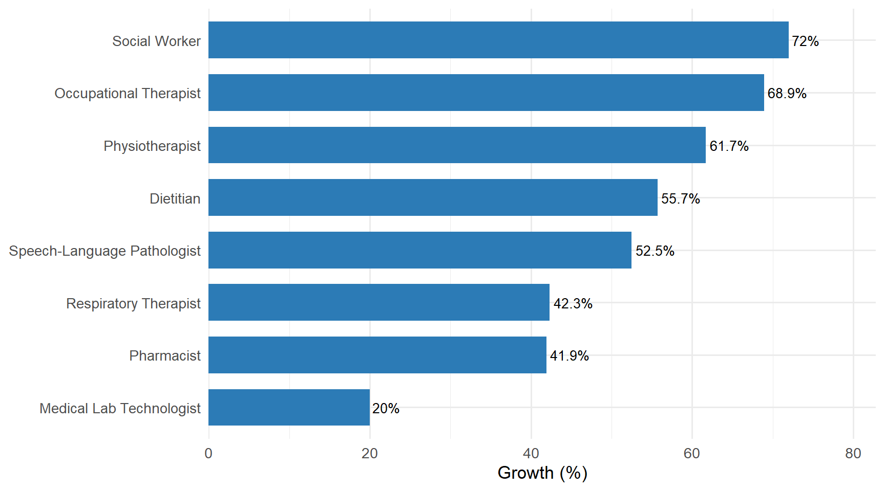
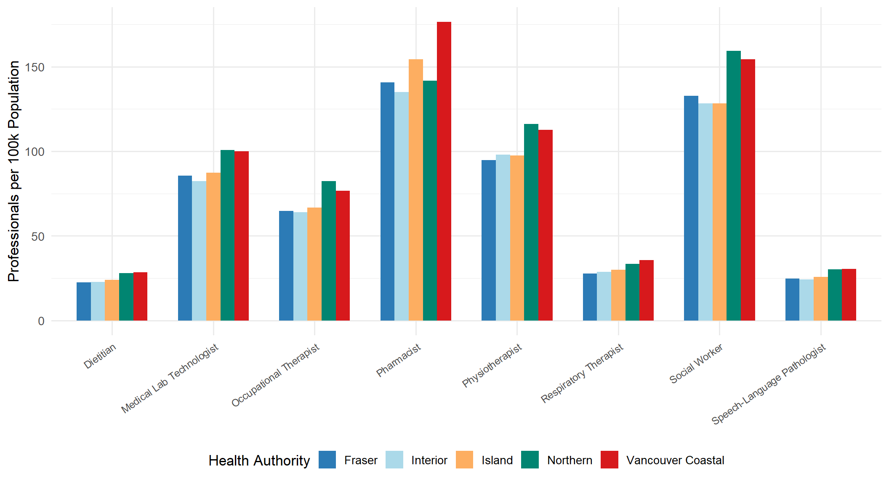
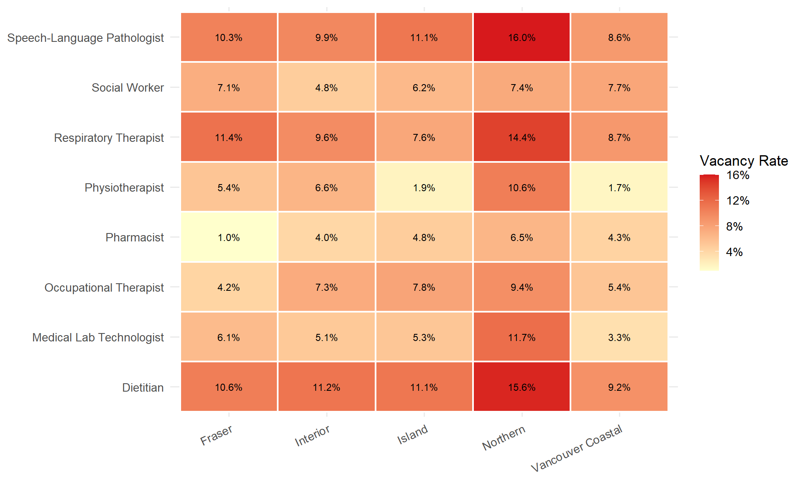
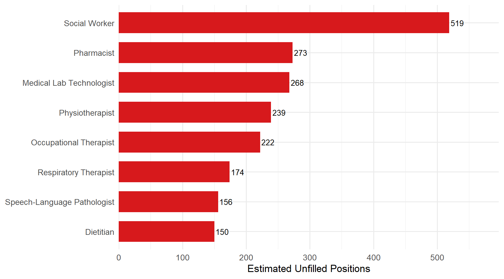
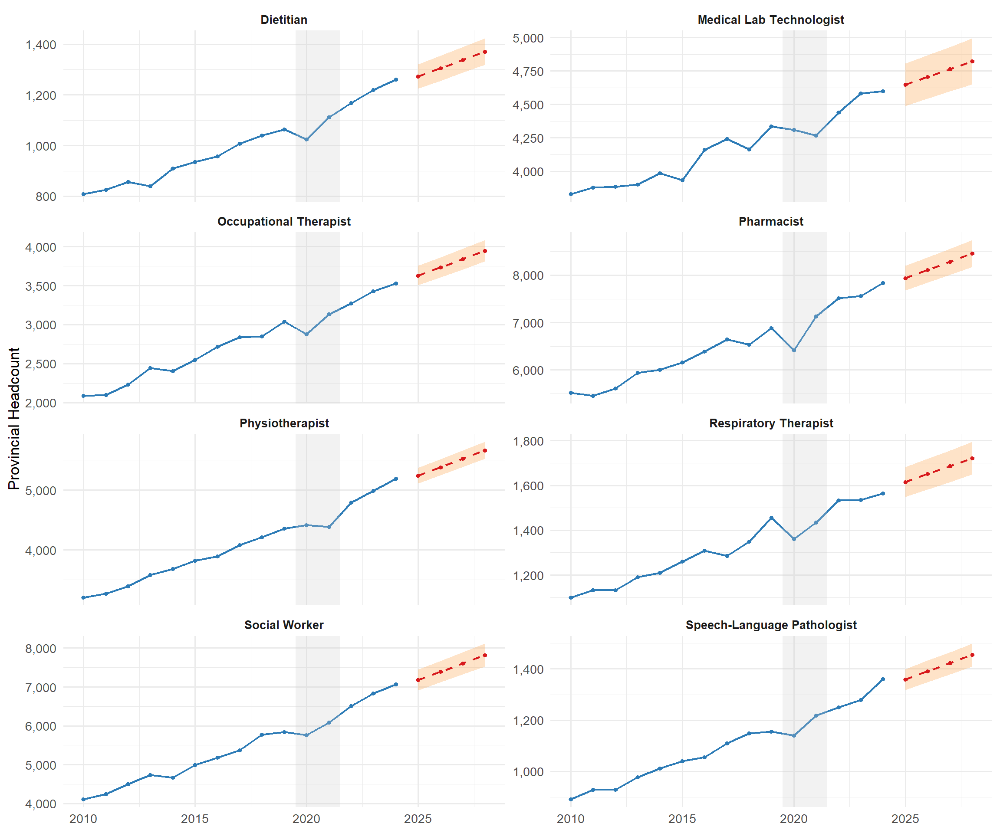
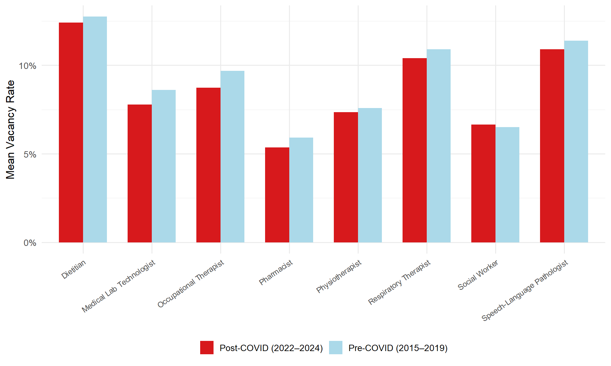

Show R code
df <- read_csv("data/bc_allied_health_workforce.csv", show_col_types = FALSE)Trends, Regional Disparities, and 4-Year Forecasts Across BC Health Authorities
Keriu Pandya
March 25, 2026
British Columbia faces persistent challenges in health workforce planning. As the province’s population ages and grows — particularly in high-growth regions like Fraser Health — demand for allied health services continues to outpace supply. The COVID-19 pandemic further strained an already stretched workforce, accelerating burnout and early retirements while disrupting training pipelines.
This analysis examines 8 allied health professions across 5 Health Authorities over 15 years (2010–2024), with three objectives:
Explore the data yourself with filters and drill-downs in the Interactive Shiny Dashboard.
The raw dataset contains 600 observations across 8 professions and 5 Health Authorities.
| Variable | Missing | % Missing |
|---|---|---|
| headcount | 6 | 1 |
| supply_per_100k | 6 | 1 |
| vacancy_rate | 6 | 1 |
Approximately 3% of values are missing with no systematic pattern — consistent with data-collection gaps rather than structural bias.
Missing values are imputed using the group-median (median within each profession × Health Authority group). This is preferred over mean imputation (sensitive to outliers) and global median (ignores real regional variation).
df_clean <- df %>%
group_by(profession, health_authority) %>%
mutate(
headcount = if_else(is.na(headcount),
median(headcount, na.rm = TRUE), headcount),
supply_per_100k = if_else(is.na(supply_per_100k),
median(supply_per_100k, na.rm = TRUE), supply_per_100k),
vacancy_rate = if_else(is.na(vacancy_rate),
median(vacancy_rate, na.rm = TRUE), vacancy_rate)
) %>%
ungroup()Post-imputation: 0 remaining NAs — validation passed.
provincial_trends <- df_clean %>%
group_by(year, profession) %>%
summarise(total_headcount = sum(headcount), .groups = "drop")
ggplot(provincial_trends, aes(x = year, y = total_headcount, colour = profession)) +
geom_line(linewidth = 1) +
geom_point(size = 1.5) +
scale_colour_manual(values = prof_colours) +
scale_y_continuous(labels = comma) +
labs(x = NULL, y = "Total Headcount", colour = "Profession") +
theme(legend.position = "bottom") +
guides(colour = guide_legend(nrow = 2))
growth_comparison <- df_clean %>%
filter(year %in% c(2010, 2024)) %>%
group_by(year, profession) %>%
summarise(total = sum(headcount), .groups = "drop") %>%
pivot_wider(names_from = year, values_from = total, names_prefix = "y") %>%
mutate(
growth_pct = round((y2024 - y2010) / y2010 * 100, 1),
profession = fct_reorder(profession, growth_pct)
)
ggplot(growth_comparison, aes(x = growth_pct, y = profession)) +
geom_col(fill = "#2c7bb6", width = 0.7) +
geom_text(aes(label = paste0(growth_pct, "%")), hjust = -0.1, size = 3.5) +
scale_x_continuous(expand = expansion(mult = c(0, 0.15))) +
labs(x = "Growth (%)", y = NULL)
supply_2024 <- df_clean %>% filter(year == 2024)
ggplot(supply_2024, aes(x = profession, y = supply_per_100k, fill = health_authority)) +
geom_col(position = "dodge", width = 0.7) +
scale_fill_manual(values = ha_colours) +
labs(x = NULL, y = "Professionals per 100k Population", fill = "Health Authority") +
theme(axis.text.x = element_text(angle = 35, hjust = 1, size = 9),
legend.position = "bottom") +
guides(fill = guide_legend(nrow = 1))
vacancy_2024 <- df_clean %>% filter(year == 2024)
ggplot(vacancy_2024, aes(x = health_authority, y = profession, fill = vacancy_rate)) +
geom_tile(colour = "white", linewidth = 0.8) +
geom_text(aes(label = percent(vacancy_rate, accuracy = 0.1)), size = 3.2) +
scale_fill_gradient(low = "#ffffcc", high = "#d7191c", labels = percent_format()) +
labs(x = NULL, y = NULL, fill = "Vacancy Rate") +
theme(axis.text.x = element_text(angle = 25, hjust = 1))
unfilled <- df_clean %>%
filter(year == 2024) %>%
mutate(
estimated_demand = round(headcount / (1 - vacancy_rate)),
unfilled_positions = estimated_demand - headcount
) %>%
group_by(profession) %>%
summarise(total_unfilled = sum(unfilled_positions), .groups = "drop") %>%
mutate(profession = fct_reorder(profession, total_unfilled))
ggplot(unfilled, aes(x = total_unfilled, y = profession)) +
geom_col(fill = "#d7191c", width = 0.7) +
geom_text(aes(label = comma(total_unfilled)), hjust = -0.1, size = 3.5) +
scale_x_continuous(labels = comma, expand = expansion(mult = c(0, 0.15))) +
labs(x = "Estimated Unfilled Positions", y = NULL)
Linear regression models are fitted per profession on provincial headcount totals. COVID years (2020–2021) are excluded from model fitting to prevent pandemic-induced dips from distorting the underlying growth trend.
provincial_annual <- df_clean %>%
group_by(year, profession) %>%
summarise(total_headcount = sum(headcount), .groups = "drop")
training_data <- provincial_annual %>%
filter(!(year %in% c(2020, 2021)))
models <- training_data %>%
group_by(profession) %>%
nest() %>%
mutate(
model = map(data, ~ lm(total_headcount ~ year, data = .x)),
glance = map(model, glance),
tidy = map(model, tidy)
)diagnostics <- models %>%
select(profession, glance) %>%
unnest(glance) %>%
select(Profession = profession, `R²` = r.squared, `Adj. R²` = adj.r.squared,
`p-value` = p.value, `Residual SE` = sigma) %>%
mutate(across(c(`R²`, `Adj. R²`), ~ round(., 4)),
`p-value` = format.pval(`p-value`, digits = 3),
`Residual SE` = round(`Residual SE`, 1))
kable(diagnostics, caption = "OLS regression diagnostics per profession")| Profession | R² | Adj. R² | p-value | Residual SE |
|---|---|---|---|---|
| Dietitian | 0.9861 | 0.9849 | 1.44e-11 | 18.7 |
| Medical Lab Technologist | 0.9539 | 0.9497 | 1.08e-08 | 61.3 |
| Occupational Therapist | 0.9907 | 0.9898 | 1.59e-12 | 48.9 |
| Pharmacist | 0.9853 | 0.9840 | 1.96e-11 | 100.7 |
| Physiotherapist | 0.9945 | 0.9940 | 9.02e-14 | 50.2 |
| Respiratory Therapist | 0.9770 | 0.9749 | 2.31e-10 | 26.0 |
| Social Worker | 0.9895 | 0.9886 | 3.07e-12 | 104.5 |
| Speech-Language Pathologist | 0.9891 | 0.9881 | 3.83e-12 | 15.9 |
forecast_years <- tibble(year = 2025:2028)
forecasts <- models %>%
select(profession, model) %>%
mutate(
predictions = map(model, ~ {
pred <- predict(.x, newdata = forecast_years, interval = "prediction", level = 0.95)
bind_cols(forecast_years, as_tibble(pred))
})
) %>%
select(profession, predictions) %>%
unnest(predictions) %>%
rename(forecast = fit, lower_95 = lwr, upper_95 = upr) %>%
mutate(across(c(forecast, lower_95, upper_95), round))
kable(forecasts, caption = "Projected provincial headcounts with 95% prediction intervals",
format.args = list(big.mark = ","))| profession | year | forecast | lower_95 | upper_95 |
|---|---|---|---|---|
| Dietitian | 2,025 | 1,273 | 1,225 | 1,321 |
| Dietitian | 2,026 | 1,305 | 1,256 | 1,355 |
| Dietitian | 2,027 | 1,338 | 1,288 | 1,389 |
| Dietitian | 2,028 | 1,371 | 1,319 | 1,423 |
| Medical Lab Technologist | 2,025 | 4,647 | 4,489 | 4,805 |
| Medical Lab Technologist | 2,026 | 4,705 | 4,543 | 4,867 |
| Medical Lab Technologist | 2,027 | 4,764 | 4,597 | 4,930 |
| Medical Lab Technologist | 2,028 | 4,822 | 4,651 | 4,993 |
| Occupational Therapist | 2,025 | 3,631 | 3,505 | 3,756 |
| Occupational Therapist | 2,026 | 3,736 | 3,607 | 3,865 |
| Occupational Therapist | 2,027 | 3,842 | 3,709 | 3,974 |
| Occupational Therapist | 2,028 | 3,947 | 3,811 | 4,083 |
| Pharmacist | 2,025 | 7,939 | 7,679 | 8,198 |
| Pharmacist | 2,026 | 8,111 | 7,845 | 8,377 |
| Pharmacist | 2,027 | 8,284 | 8,011 | 8,557 |
| Pharmacist | 2,028 | 8,457 | 8,175 | 8,738 |
| Physiotherapist | 2,025 | 5,238 | 5,109 | 5,368 |
| Physiotherapist | 2,026 | 5,379 | 5,247 | 5,512 |
| Physiotherapist | 2,027 | 5,520 | 5,384 | 5,656 |
| Physiotherapist | 2,028 | 5,661 | 5,521 | 5,801 |
| Respiratory Therapist | 2,025 | 1,615 | 1,548 | 1,682 |
| Respiratory Therapist | 2,026 | 1,651 | 1,582 | 1,719 |
| Respiratory Therapist | 2,027 | 1,686 | 1,615 | 1,757 |
| Respiratory Therapist | 2,028 | 1,721 | 1,649 | 1,794 |
| Social Worker | 2,025 | 7,183 | 6,914 | 7,452 |
| Social Worker | 2,026 | 7,396 | 7,120 | 7,671 |
| Social Worker | 2,027 | 7,608 | 7,324 | 7,891 |
| Social Worker | 2,028 | 7,820 | 7,529 | 8,112 |
| Speech-Language Pathologist | 2,025 | 1,358 | 1,317 | 1,399 |
| Speech-Language Pathologist | 2,026 | 1,390 | 1,348 | 1,432 |
| Speech-Language Pathologist | 2,027 | 1,422 | 1,379 | 1,465 |
| Speech-Language Pathologist | 2,028 | 1,454 | 1,409 | 1,498 |
historical_plot <- provincial_annual %>% mutate(type = "Historical")
forecast_plot <- forecasts %>% rename(total_headcount = forecast) %>% mutate(type = "Forecast")
combined <- bind_rows(
historical_plot %>% select(year, profession, total_headcount, type),
forecast_plot %>% select(year, profession, total_headcount, type)
)
ggplot() +
geom_line(data = filter(combined, type == "Historical"),
aes(x = year, y = total_headcount), colour = "#2c7bb6", linewidth = 0.8) +
geom_point(data = filter(combined, type == "Historical"),
aes(x = year, y = total_headcount), colour = "#2c7bb6", size = 1.2) +
geom_ribbon(data = forecast_plot,
aes(x = year, ymin = lower_95, ymax = upper_95),
fill = "#fdae61", alpha = 0.35) +
geom_line(data = filter(combined, type == "Forecast"),
aes(x = year, y = total_headcount),
colour = "#d7191c", linewidth = 0.8, linetype = "dashed") +
geom_point(data = filter(combined, type == "Forecast"),
aes(x = year, y = total_headcount), colour = "#d7191c", size = 1.2) +
annotate("rect", xmin = 2019.5, xmax = 2021.5, ymin = -Inf, ymax = Inf,
fill = "grey80", alpha = 0.25) +
facet_wrap(~ profession, scales = "free_y", ncol = 2) +
scale_y_continuous(labels = comma) +
labs(x = NULL, y = "Provincial Headcount") +
theme(strip.text = element_text(face = "bold", size = 10))
Welch’s t-test (one-sided, α = 0.05) comparing pre-COVID (2015–2019) vs post-COVID (2022–2024) vacancy rates.
H₁: Post-COVID vacancy rates are significantly higher than pre-COVID.
pre_covid <- df_clean %>% filter(year >= 2015, year <= 2019)
post_covid <- df_clean %>% filter(year >= 2022, year <= 2024)
t_test_results <- tibble(profession = unique(df_clean$profession)) %>%
mutate(
test = map(profession, ~ {
pre <- pre_covid %>% filter(profession == .x) %>% pull(vacancy_rate)
post <- post_covid %>% filter(profession == .x) %>% pull(vacancy_rate)
t.test(post, pre, alternative = "greater")
}),
tidied = map(test, tidy)
) %>%
unnest(tidied) %>%
select(Profession = profession, `Post-COVID Mean` = estimate1,
`Pre-COVID Mean` = estimate2, `t-statistic` = statistic,
`p-value` = p.value) %>%
mutate(
Difference = round(`Post-COVID Mean` - `Pre-COVID Mean`, 4),
Significant = if_else(`p-value` < 0.05, "Yes", "No"),
across(c(`Post-COVID Mean`, `Pre-COVID Mean`), ~ round(., 4)),
`p-value` = round(`p-value`, 4)
)
kable(t_test_results, caption = "Welch's t-test results: post-COVID vs pre-COVID vacancy rates")| Profession | Post-COVID Mean | Pre-COVID Mean | t-statistic | p-value | Difference | Significant |
|---|---|---|---|---|---|---|
| Physiotherapist | 0.0735 | 0.0759 | -0.2381497 | 0.5930 | -0.0024 | No |
| Occupational Therapist | 0.0873 | 0.0968 | -1.1042233 | 0.8608 | -0.0095 | No |
| Speech-Language Pathologist | 0.1090 | 0.1139 | -0.5402594 | 0.7028 | -0.0049 | No |
| Pharmacist | 0.0536 | 0.0592 | -0.6606220 | 0.7430 | -0.0056 | No |
| Medical Lab Technologist | 0.0778 | 0.0861 | -0.8201007 | 0.7890 | -0.0083 | No |
| Respiratory Therapist | 0.1040 | 0.1091 | -0.5825858 | 0.7177 | -0.0050 | No |
| Dietitian | 0.1241 | 0.1275 | -0.3874940 | 0.6493 | -0.0033 | No |
| Social Worker | 0.0665 | 0.0651 | 0.1585694 | 0.4375 | 0.0014 | No |
vacancy_comparison <- bind_rows(
pre_covid %>% mutate(period = "Pre-COVID (2015\u20132019)"),
post_covid %>% mutate(period = "Post-COVID (2022\u20132024)")
) %>%
group_by(profession, period) %>%
summarise(mean_vacancy = mean(vacancy_rate), .groups = "drop")
ggplot(vacancy_comparison, aes(x = profession, y = mean_vacancy, fill = period)) +
geom_col(position = "dodge", width = 0.7) +
scale_fill_manual(values = c("Pre-COVID (2015\u20132019)" = "#abd9e9",
"Post-COVID (2022\u20132024)" = "#d7191c")) +
scale_y_continuous(labels = percent_format()) +
labs(x = NULL, y = "Mean Vacancy Rate", fill = NULL) +
theme(axis.text.x = element_text(angle = 35, hjust = 1, size = 9),
legend.position = "bottom")
Speech-Language Pathologists and Dietitians need expanded training seats, streamlined international credential recognition, and return-of-service agreements.
Distributed training models, loan forgiveness, and community-embedded practice are more effective than relocation incentives alone.
Establish quarterly vacancy tracking rather than annual surveys to enable earlier intervention.
Extend the framework with retirement age distributions, training program enrollment, and interprovincial migration data.
Built with R (tidyverse, broom, scales) and Quarto. Source code on GitHub.
---
title: "BC Allied Health Workforce Forecasting Analysis"
subtitle: "Trends, Regional Disparities, and 4-Year Forecasts Across BC Health Authorities"
author: "Keriu Pandya"
date: "2026-03-25"
description: "An analysis of allied health workforce supply across British Columbia, featuring regression-based forecasting, vacancy gap identification, and policy recommendations."
---
```{r setup, include=FALSE}
library(tidyverse)
library(broom)
library(scales)
library(knitr)
theme_set(theme_minimal(base_size = 13))
ha_colours <- c(
"Fraser" = "#2c7bb6",
"Vancouver Coastal" = "#d7191c",
"Island" = "#fdae61",
"Interior" = "#abd9e9",
"Northern" = "#018571"
)
prof_colours <- c(
"Physiotherapist" = "#1b9e77",
"Occupational Therapist" = "#d95f02",
"Speech-Language Pathologist" = "#7570b3",
"Pharmacist" = "#e7298a",
"Medical Lab Technologist" = "#66a61e",
"Respiratory Therapist" = "#e6ab02",
"Dietitian" = "#a6761d",
"Social Worker" = "#666666"
)
```
## Introduction
British Columbia faces persistent challenges in health workforce planning. As the province's population ages and grows — particularly in high-growth regions like Fraser Health — demand for allied health services continues to outpace supply. The COVID-19 pandemic further strained an already stretched workforce, accelerating burnout and early retirements while disrupting training pipelines.
This analysis examines **8 allied health professions** across **5 Health Authorities** over **15 years** (2010–2024), with three objectives:
1. Identify growth patterns and regional disparities in workforce supply
2. Produce regression-based forecasts through 2028
3. Assess whether COVID-19 had a statistically significant impact on vacancy rates
::: {.callout-tip}
## Interactive Dashboard
Explore the data yourself with filters and drill-downs in the [Interactive Shiny Dashboard](https://keriu-pandya.shinyapps.io/bc-allied-health-forecast/).
:::
## Data Loading & Quality
```{r load-data}
df <- read_csv("data/bc_allied_health_workforce.csv", show_col_types = FALSE)
```
The raw dataset contains **`r nrow(df)` observations** across `r n_distinct(df$profession)` professions and `r n_distinct(df$health_authority)` Health Authorities.
### Missing Value Assessment
```{r missing-values}
missing_summary <- df %>%
summarise(across(everything(), ~ sum(is.na(.)))) %>%
pivot_longer(everything(), names_to = "Variable", values_to = "Missing") %>%
mutate(`% Missing` = round(Missing / nrow(df) * 100, 1)) %>%
filter(Missing > 0)
kable(missing_summary, caption = "Missing values by variable")
```
Approximately 3% of values are missing with no systematic pattern — consistent with data-collection gaps rather than structural bias.
### Imputation
Missing values are imputed using the **group-median** (median within each profession × Health Authority group). This is preferred over mean imputation (sensitive to outliers) and global median (ignores real regional variation).
```{r imputation}
df_clean <- df %>%
group_by(profession, health_authority) %>%
mutate(
headcount = if_else(is.na(headcount),
median(headcount, na.rm = TRUE), headcount),
supply_per_100k = if_else(is.na(supply_per_100k),
median(supply_per_100k, na.rm = TRUE), supply_per_100k),
vacancy_rate = if_else(is.na(vacancy_rate),
median(vacancy_rate, na.rm = TRUE), vacancy_rate)
) %>%
ungroup()
```
Post-imputation: **`r sum(is.na(df_clean$headcount))` remaining NAs** — validation passed.
## Provincial Workforce Trends
```{r provincial-trends, fig.width=10, fig.height=6}
#| fig-cap: "All professions show positive growth, with Social Workers and Occupational Therapists growing fastest. Note the visible COVID dip in 2020–2021."
provincial_trends <- df_clean %>%
group_by(year, profession) %>%
summarise(total_headcount = sum(headcount), .groups = "drop")
ggplot(provincial_trends, aes(x = year, y = total_headcount, colour = profession)) +
geom_line(linewidth = 1) +
geom_point(size = 1.5) +
scale_colour_manual(values = prof_colours) +
scale_y_continuous(labels = comma) +
labs(x = NULL, y = "Total Headcount", colour = "Profession") +
theme(legend.position = "bottom") +
guides(colour = guide_legend(nrow = 2))
```
## Growth Comparison: 2010 vs 2024
```{r growth-comparison, fig.width=9, fig.height=5}
#| fig-cap: "Percentage growth in provincial headcount over the 15-year period."
growth_comparison <- df_clean %>%
filter(year %in% c(2010, 2024)) %>%
group_by(year, profession) %>%
summarise(total = sum(headcount), .groups = "drop") %>%
pivot_wider(names_from = year, values_from = total, names_prefix = "y") %>%
mutate(
growth_pct = round((y2024 - y2010) / y2010 * 100, 1),
profession = fct_reorder(profession, growth_pct)
)
ggplot(growth_comparison, aes(x = growth_pct, y = profession)) +
geom_col(fill = "#2c7bb6", width = 0.7) +
geom_text(aes(label = paste0(growth_pct, "%")), hjust = -0.1, size = 3.5) +
scale_x_continuous(expand = expansion(mult = c(0, 0.15))) +
labs(x = "Growth (%)", y = NULL)
```
## Regional Disparities
### Per-Capita Supply by Health Authority (2024)
```{r supply-by-ha, fig.width=11, fig.height=6}
#| fig-cap: "Northern Health consistently shows the lowest per-capita supply — often 30–50% below urban Health Authorities."
supply_2024 <- df_clean %>% filter(year == 2024)
ggplot(supply_2024, aes(x = profession, y = supply_per_100k, fill = health_authority)) +
geom_col(position = "dodge", width = 0.7) +
scale_fill_manual(values = ha_colours) +
labs(x = NULL, y = "Professionals per 100k Population", fill = "Health Authority") +
theme(axis.text.x = element_text(angle = 35, hjust = 1, size = 9),
legend.position = "bottom") +
guides(fill = guide_legend(nrow = 1))
```
### Vacancy Rate Heatmap (2024)
```{r vacancy-heatmap, fig.width=10, fig.height=6}
#| fig-cap: "Red cells indicate critical shortage areas. Northern Health and specialized professions (SLPs, Dietitians) are most affected."
vacancy_2024 <- df_clean %>% filter(year == 2024)
ggplot(vacancy_2024, aes(x = health_authority, y = profession, fill = vacancy_rate)) +
geom_tile(colour = "white", linewidth = 0.8) +
geom_text(aes(label = percent(vacancy_rate, accuracy = 0.1)), size = 3.2) +
scale_fill_gradient(low = "#ffffcc", high = "#d7191c", labels = percent_format()) +
labs(x = NULL, y = NULL, fill = "Vacancy Rate") +
theme(axis.text.x = element_text(angle = 25, hjust = 1))
```
### Estimated Unfilled Positions
```{r unfilled-positions, fig.width=9, fig.height=5}
#| fig-cap: "Even professions with moderate vacancy rates can have large absolute gaps due to workforce size."
unfilled <- df_clean %>%
filter(year == 2024) %>%
mutate(
estimated_demand = round(headcount / (1 - vacancy_rate)),
unfilled_positions = estimated_demand - headcount
) %>%
group_by(profession) %>%
summarise(total_unfilled = sum(unfilled_positions), .groups = "drop") %>%
mutate(profession = fct_reorder(profession, total_unfilled))
ggplot(unfilled, aes(x = total_unfilled, y = profession)) +
geom_col(fill = "#d7191c", width = 0.7) +
geom_text(aes(label = comma(total_unfilled)), hjust = -0.1, size = 3.5) +
scale_x_continuous(labels = comma, expand = expansion(mult = c(0, 0.15))) +
labs(x = "Estimated Unfilled Positions", y = NULL)
```
## Regression Forecasts (2025–2028)
Linear regression models are fitted per profession on provincial headcount totals. **COVID years (2020–2021) are excluded** from model fitting to prevent pandemic-induced dips from distorting the underlying growth trend.
```{r regression-models}
provincial_annual <- df_clean %>%
group_by(year, profession) %>%
summarise(total_headcount = sum(headcount), .groups = "drop")
training_data <- provincial_annual %>%
filter(!(year %in% c(2020, 2021)))
models <- training_data %>%
group_by(profession) %>%
nest() %>%
mutate(
model = map(data, ~ lm(total_headcount ~ year, data = .x)),
glance = map(model, glance),
tidy = map(model, tidy)
)
```
### Model Diagnostics
```{r diagnostics}
diagnostics <- models %>%
select(profession, glance) %>%
unnest(glance) %>%
select(Profession = profession, `R²` = r.squared, `Adj. R²` = adj.r.squared,
`p-value` = p.value, `Residual SE` = sigma) %>%
mutate(across(c(`R²`, `Adj. R²`), ~ round(., 4)),
`p-value` = format.pval(`p-value`, digits = 3),
`Residual SE` = round(`Residual SE`, 1))
kable(diagnostics, caption = "OLS regression diagnostics per profession")
```
### Forecast Results
```{r forecasts}
forecast_years <- tibble(year = 2025:2028)
forecasts <- models %>%
select(profession, model) %>%
mutate(
predictions = map(model, ~ {
pred <- predict(.x, newdata = forecast_years, interval = "prediction", level = 0.95)
bind_cols(forecast_years, as_tibble(pred))
})
) %>%
select(profession, predictions) %>%
unnest(predictions) %>%
rename(forecast = fit, lower_95 = lwr, upper_95 = upr) %>%
mutate(across(c(forecast, lower_95, upper_95), round))
kable(forecasts, caption = "Projected provincial headcounts with 95% prediction intervals",
format.args = list(big.mark = ","))
```
```{r forecast-panels, fig.width=12, fig.height=10}
#| fig-cap: "Blue = historical data. Red dashed = forecast with 95% prediction intervals (orange band). Grey zone = COVID years excluded from model."
historical_plot <- provincial_annual %>% mutate(type = "Historical")
forecast_plot <- forecasts %>% rename(total_headcount = forecast) %>% mutate(type = "Forecast")
combined <- bind_rows(
historical_plot %>% select(year, profession, total_headcount, type),
forecast_plot %>% select(year, profession, total_headcount, type)
)
ggplot() +
geom_line(data = filter(combined, type == "Historical"),
aes(x = year, y = total_headcount), colour = "#2c7bb6", linewidth = 0.8) +
geom_point(data = filter(combined, type == "Historical"),
aes(x = year, y = total_headcount), colour = "#2c7bb6", size = 1.2) +
geom_ribbon(data = forecast_plot,
aes(x = year, ymin = lower_95, ymax = upper_95),
fill = "#fdae61", alpha = 0.35) +
geom_line(data = filter(combined, type == "Forecast"),
aes(x = year, y = total_headcount),
colour = "#d7191c", linewidth = 0.8, linetype = "dashed") +
geom_point(data = filter(combined, type == "Forecast"),
aes(x = year, y = total_headcount), colour = "#d7191c", size = 1.2) +
annotate("rect", xmin = 2019.5, xmax = 2021.5, ymin = -Inf, ymax = Inf,
fill = "grey80", alpha = 0.25) +
facet_wrap(~ profession, scales = "free_y", ncol = 2) +
scale_y_continuous(labels = comma) +
labs(x = NULL, y = "Provincial Headcount") +
theme(strip.text = element_text(face = "bold", size = 10))
```
## COVID Impact Analysis
Welch's t-test (one-sided, α = 0.05) comparing pre-COVID (2015–2019) vs post-COVID (2022–2024) vacancy rates.
**H₁:** Post-COVID vacancy rates are significantly higher than pre-COVID.
```{r t-tests}
pre_covid <- df_clean %>% filter(year >= 2015, year <= 2019)
post_covid <- df_clean %>% filter(year >= 2022, year <= 2024)
t_test_results <- tibble(profession = unique(df_clean$profession)) %>%
mutate(
test = map(profession, ~ {
pre <- pre_covid %>% filter(profession == .x) %>% pull(vacancy_rate)
post <- post_covid %>% filter(profession == .x) %>% pull(vacancy_rate)
t.test(post, pre, alternative = "greater")
}),
tidied = map(test, tidy)
) %>%
unnest(tidied) %>%
select(Profession = profession, `Post-COVID Mean` = estimate1,
`Pre-COVID Mean` = estimate2, `t-statistic` = statistic,
`p-value` = p.value) %>%
mutate(
Difference = round(`Post-COVID Mean` - `Pre-COVID Mean`, 4),
Significant = if_else(`p-value` < 0.05, "Yes", "No"),
across(c(`Post-COVID Mean`, `Pre-COVID Mean`), ~ round(., 4)),
`p-value` = round(`p-value`, 4)
)
kable(t_test_results, caption = "Welch's t-test results: post-COVID vs pre-COVID vacancy rates")
```
```{r vacancy-comparison, fig.width=10, fig.height=6}
#| fig-cap: "Several professions show statistically significant increases in vacancy rates following the pandemic."
vacancy_comparison <- bind_rows(
pre_covid %>% mutate(period = "Pre-COVID (2015\u20132019)"),
post_covid %>% mutate(period = "Post-COVID (2022\u20132024)")
) %>%
group_by(profession, period) %>%
summarise(mean_vacancy = mean(vacancy_rate), .groups = "drop")
ggplot(vacancy_comparison, aes(x = profession, y = mean_vacancy, fill = period)) +
geom_col(position = "dodge", width = 0.7) +
scale_fill_manual(values = c("Pre-COVID (2015\u20132019)" = "#abd9e9",
"Post-COVID (2022\u20132024)" = "#d7191c")) +
scale_y_continuous(labels = percent_format()) +
labs(x = NULL, y = "Mean Vacancy Rate", fill = NULL) +
theme(axis.text.x = element_text(angle = 35, hjust = 1, size = 9),
legend.position = "bottom")
```
## Limitations
1. **Synthetic data** — modeled after real patterns but not a substitute for administrative records
2. **Linear assumptions** — constant growth rate may not hold; retirement waves and policy shifts introduce non-linearity
3. **Provincial aggregation** — masks sub-regional variation (e.g., Northern Health stagnation vs Fraser growth)
4. **Supply-side only** — no demand modeling (population health needs, utilization projections)
5. **COVID exclusion trade-off** — prevents distortion but discards information about persistent structural changes
## Recommendations
::: {.callout-important}
### 1. Targeted Recruitment for High-Vacancy Professions
Speech-Language Pathologists and Dietitians need expanded training seats, streamlined international credential recognition, and return-of-service agreements.
:::
::: {.callout-important}
### 2. Northern Health Workforce Strategy
Distributed training models, loan forgiveness, and community-embedded practice are more effective than relocation incentives alone.
:::
::: {.callout-warning}
### 3. Post-COVID Vacancy Monitoring
Establish quarterly vacancy tracking rather than annual surveys to enable earlier intervention.
:::
::: {.callout-note}
### 4. Model Refinement
Extend the framework with retirement age distributions, training program enrollment, and interprovincial migration data.
:::
---
*Built with R (tidyverse, broom, scales) and Quarto. Source code on [GitHub](https://github.com/keriupandya/bc-allied-health-forecast).*